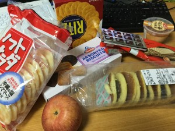

Game Jams?
- Make a video game for a given theme:
- "Small World"
- "You're the Villain"
- "10 Seconds"
- You're given (typically) 48 hours.
- Make all by yourself!
(incl. graphics / music)
- A bit like Hackathon.
Here's the drill
- Prepare the tools / base code.
- Unity, HTML5, OpenGL, etc.
- Get ready for the weekend.
- Many jams allow team work.
- Do the work.
- Show your progress:
Screenshots /
Timelapse /
Live Streaming

How Does This Benefit Me?
- "Time Management Skill"
- Submission deadlines?
- Next meeting with advisor?
- Improve yourself = try and fail a lot.
- Game Jam = Best place to fail.
- My personal graves.
Research Game Jam Strategy
- Have good food & sleep.
- Keep a TO-DO list. Priortize things.
- Get a MVP
ASAP.
- Don't brood too much on details.
- Programming: Write for clarity.
- Write a "postmortem".
- What went well?
- What could be done differently?
- Do it better next time.
Conclusions
- Train your time management skill.
- Have an enjoyable experience.
- Rinse and repeat.